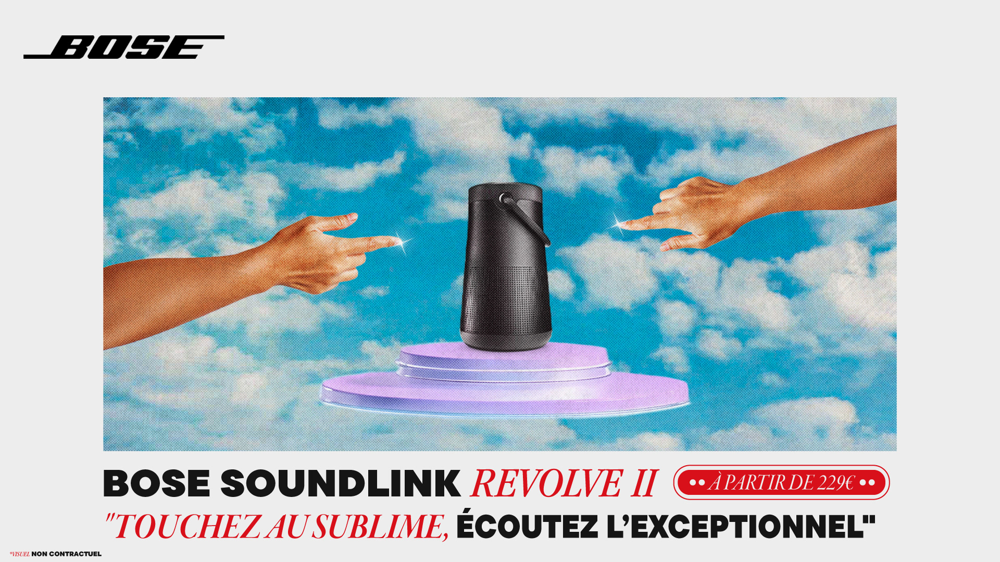

Affiche Bose SoundLink Revolve II
Affiche commerciale fictive pour l'enceinte Bose SoundLink Revolve II. Un exercice de direction artistique orienté produit, avec une composition pensée pour valoriser l'objet et son identité sonore.

